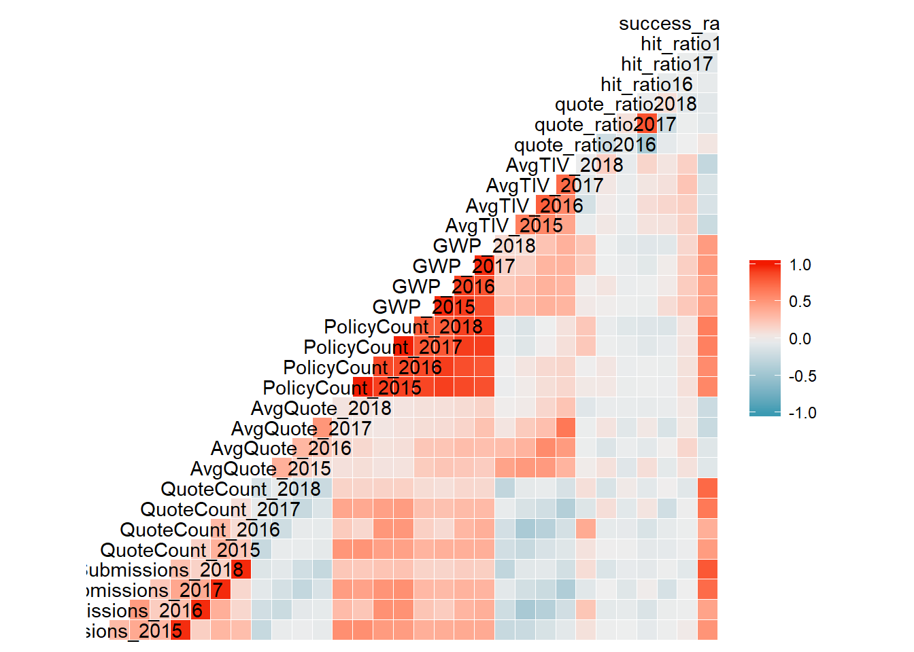
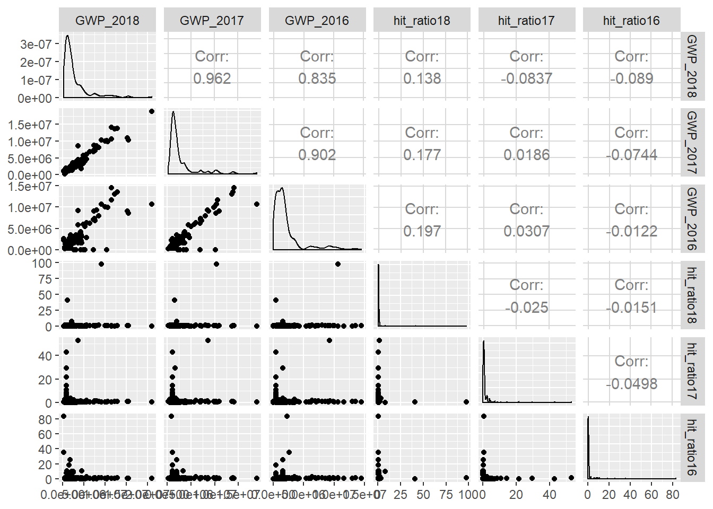
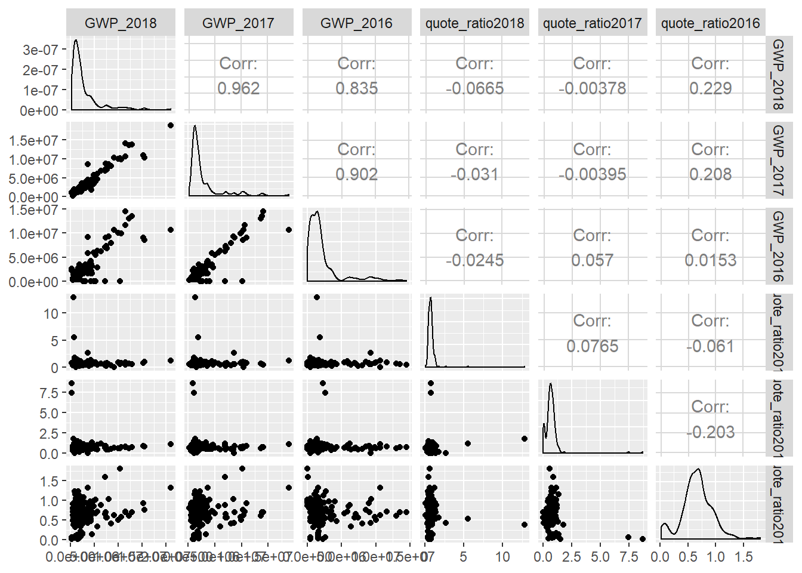
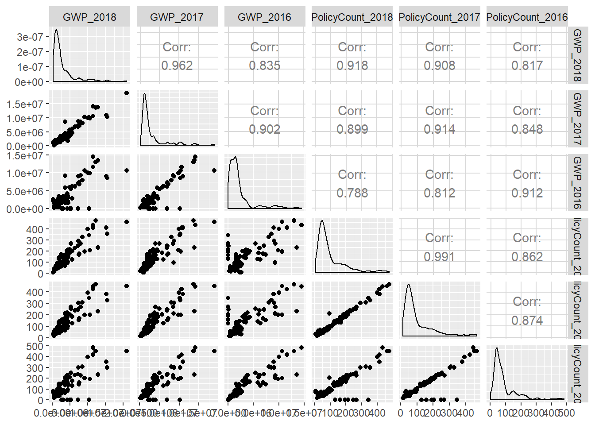
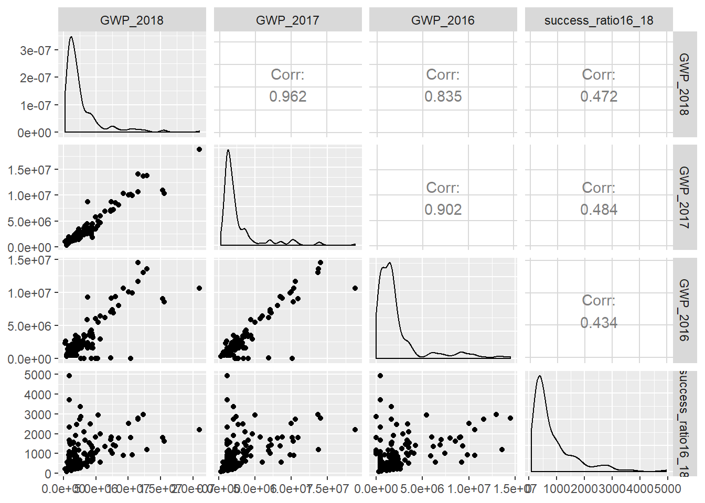
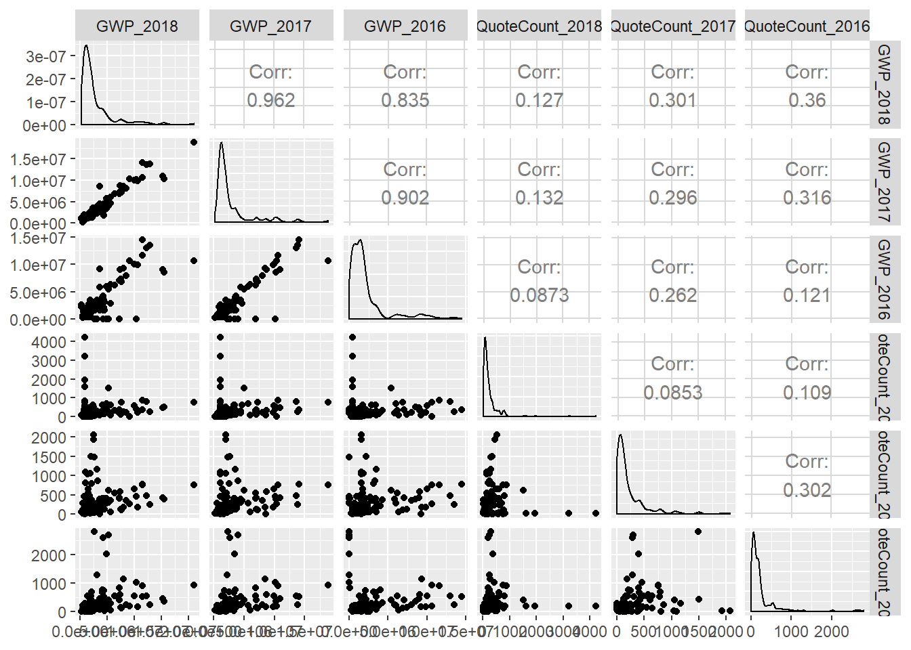
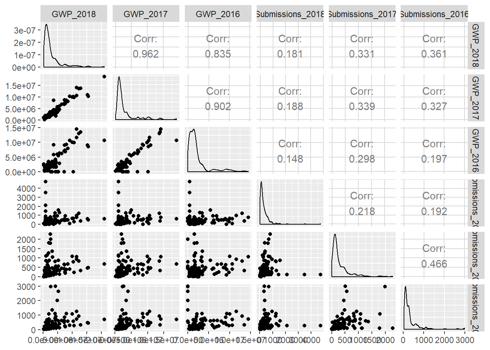
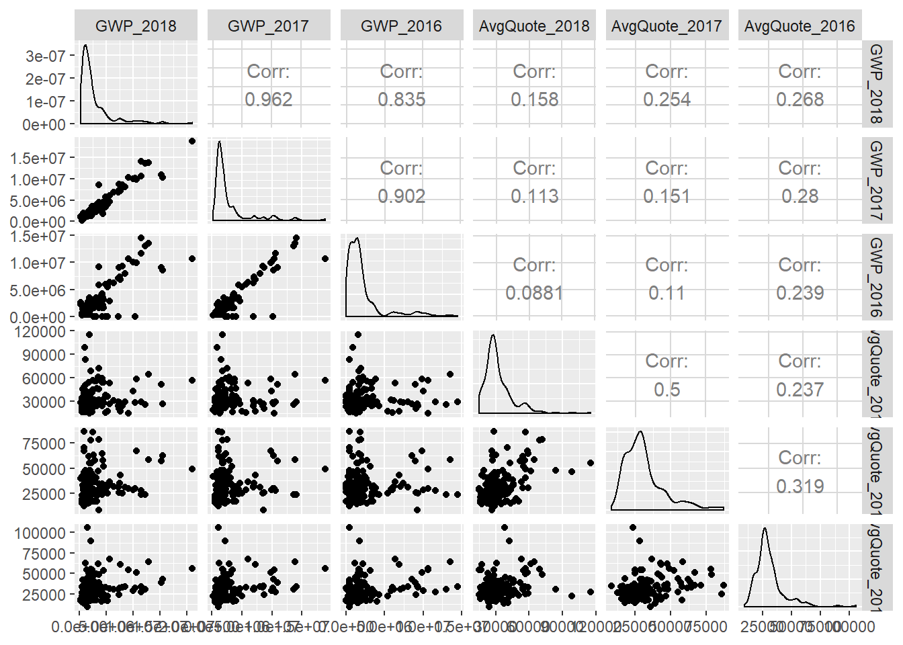
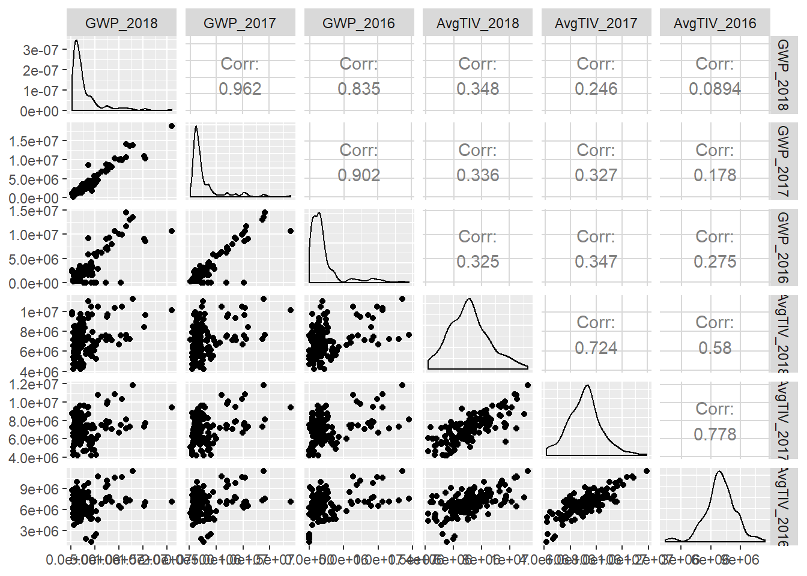

Exploratory Data Analysis
We can generate additional metrics to measure broker performance: "Hit Ratio", "Quote Ratio" & "Success Ratio"
Let's create a second data frame called “myBDFclean”. In this data frame variables pertaining to the years 2013 and 2014 need to be excluded.
Furthermore, this data frame can be used to generate additional features/ calculations to measure broker performance using the function “mutate”.
The new calculated fields include supplementary operational metrics such as,
“Quote Ratio” for year x: Quote count for the year x/ Submissions for the year x,
“Hit Ratio” for year x: Policy count for the year x/ Quote count for the year x
“Success Ratio” for years x....n: sum(Policy count for year x...n)/ sum(Submissions for year x...n)
With respect to the broker segmentation task, we need to create a subset named; “myalchemySubset” from the data frame “myBDFClean”. This subset includes three years’ worth of data required for the clustering. The variables chosen for part 1 of the project were, quote counts: 'QuoteCount' from 2016 to 2018, policy counts: 'PolicyCount' from 2016 to 2018, gross written premiums: GWP from 2016 to 2018 as well as the newly generated measure; success ratio (from 2016 to 2018).
# To remove unnecessary columns before clustering creating new DF only for clustering
myBDFclean <- myBDF %>%
mutate(quote_ratio2016 = QuoteCount_2016/ Submissions_2016,
quote_ratio2017 = QuoteCount_2017/ Submissions_2017,
quote_ratio2018 = QuoteCount_2018/ Submissions_2018,
hit_ratio16 = PolicyCount_2016/ QuoteCount_2016,
hit_ratio17 = PolicyCount_2017/ QuoteCount_2017,
hit_ratio18 = PolicyCount_2018/ QuoteCount_2018,
success_ratio16_18 = PolicyCount_2016+ PolicyCount_2017 + PolicyCount_2018/
Submissions_2016 + Submissions_2017 + Submissions_2018) %>%
select(-Submissions_2014, -QuoteCount_2013, -QuoteCount_2014, -AvgQuote_2013, -AvgQuote_2014)
# Calculating NAs = 0
sum(is.na(myBDFclean))
## [1] 0
Correlation Graphs
To get a deeper insight into the data we can generate a series correlation graphs using the 'ggcorr' function of the 'Ggally' library
# Plotting correlation plots with GWP (2016 to 2018) against all other variables
ggcorr(myBDFclean)

ggpairs(myBDFclean, columns = c("GWP_2018", "GWP_2017", "GWP_2016","hit_ratio18", "hit_ratio17", "hit_ratio16" ))

ggpairs(myBDFclean, columns = c("GWP_2018", "GWP_2017", "GWP_2016", "quote_ratio2018", "quote_ratio2017", "quote_ratio2016"))

ggpairs(myBDFclean, columns = c("GWP_2018", "GWP_2017", "GWP_2016", "PolicyCount_2018", "PolicyCount_2017", "PolicyCount_2016"))

ggpairs(myBDFclean, columns = c("GWP_2018", "GWP_2017", "GWP_2016", "success_ratio16_18"))

ggpairs(myBDFclean, columns = c("GWP_2018", "GWP_2017", "GWP_2016", "QuoteCount_2018", "QuoteCount_2017", "QuoteCount_2016"))

ggpairs(myBDFclean, columns = c("GWP_2018", "GWP_2017", "GWP_2016", "Submissions_2018", "Submissions_2017", "Submissions_2016"))

ggpairs(myBDFclean, columns = c("GWP_2018", "GWP_2017", "GWP_2016", "AvgQuote_2018", "AvgQuote_2017", "AvgQuote_2016"))

ggpairs(myBDFclean, columns = c("GWP_2018", "GWP_2017", "GWP_2016", "AvgTIV_2018", "AvgTIV_2017", "AvgTIV_2016"))

Summary Statistics
# Based on correlation graphs creating a subset of all important variables for clustering
myalchemySubset <- (myBDFclean [, c("QuoteCount_2016", "QuoteCount_2017", "QuoteCount_2018",
"PolicyCount_2016", "PolicyCount_2017", "PolicyCount_2018",
"GWP_2016", "GWP_2017", "GWP_2018", "success_ratio16_18")])
summary(myalchemySubset)
## QuoteCount_2016 QuoteCount_2017 QuoteCount_2018 PolicyCount_2016
## Min. : 1.0 Min. : 1.0 Min. : 1.0 Min. : 1.00
## 1st Qu.: 60.0 1st Qu.: 52.0 1st Qu.: 77.0 1st Qu.: 37.00
## Median : 123.0 Median : 108.5 Median : 137.5 Median : 60.50
## Mean : 240.4 Mean : 222.4 Mean : 259.7 Mean : 90.42
## 3rd Qu.: 221.5 3rd Qu.: 254.5 3rd Qu.: 252.5 3rd Qu.: 94.75
## Max. :2789.0 Max. :2063.0 Max. :4216.0 Max. :482.00
## PolicyCount_2017 PolicyCount_2018 GWP_2016 GWP_2017
## Min. : 15.0 Min. : 6.00 Min. : 4553 Min. : 267093
## 1st Qu.: 43.0 1st Qu.: 41.00 1st Qu.: 473456 1st Qu.: 1155401
## Median : 62.0 Median : 62.00 Median : 1476275 Median : 1698394
## Mean : 99.2 Mean : 98.59 Mean : 2275913 Mean : 2715892
## 3rd Qu.:125.8 3rd Qu.:122.75 3rd Qu.: 2247211 3rd Qu.: 2700402
## Max. :466.0 Max. :475.00 Max. :14503932 Max. :18815197
## GWP_2018 success_ratio16_18
## Min. : 230565 Min. : 98.33
## 1st Qu.: 861229 1st Qu.: 334.37
## Median : 1692199 Median : 528.36
## Mean : 2747650 Mean : 836.94
## 3rd Qu.: 3140648 3rd Qu.:1042.60
## Max. :21032163 Max. :4932.15